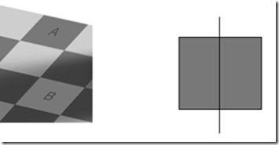

Michael's twirling dancer link generated a lot of chatter, but this one seems even less fathomable to me
Michele's posted an image as an example of your brain messing with your head (as it were). In this image, the squares marked A and B are the same colour!

Don't believe me? I didn't either, so I snipped a small part of the image and placed it in Paint.
Still didn't look possible, so I drew a rectangle next to the image, split it in 2 and used the eye dropper tool to pick up the colour first from square A (and filled the left segment) and then from B (and filled the right segment).

As my son would say - "Freaky!"